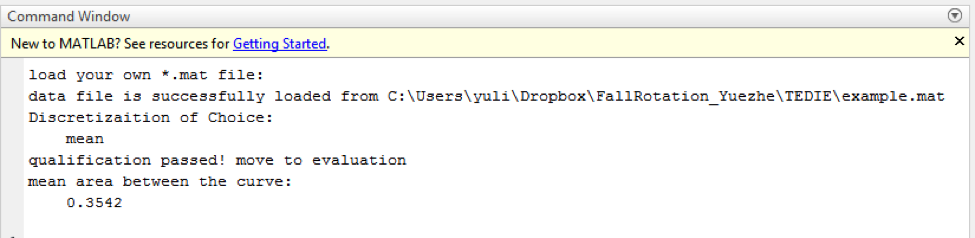

<!DOCTYPE html>
<html>
<head>
	<title></title>
</head>
<body>

</body>
</html>
<!-- this is for the title -->
<head>
	<meta charset = 'utf-8'>
	<title>TEDIE Manual </title>
</head>
<style>
	body {background-color: white}
	h2 {color: #3498D8;}
	.tsection
	{
		border: thin #336699 solid;
		background-color: white;
		padding: 20px;
		margin: 20px;
		text-align: left;
		font-size: 14pt;

	}
</style>


<body>
<!-- this is for the content part of the TEDIE manual -->
<h1> TEDIE MANUAL </h1>
	<nav>
		<ul>
			<li><a href = "#TEDIE_matlab">Use TEDIE in MATLAB</a></li>
			<li><a href = "#load_data">Load Data for TEDIE</a></li>
			<li><a href = "#disc_choice">Choose Discretization Method for TEDIE</a></li>
			<li><a href="#result">TEDIE Result in Commend Window</a></li>
			<li><a href="#code">TEDIE Source Code</a></li>
		</ul>
	</nav>

<!-- this is for the body part of the TEDIE manual -->

	<h2 id = TEDIE_matlab>Use TEDIE in MATLAB</h2>
	<div class = "tsection">
		This is a document that intend to explain how two-step discretization evaluation (TEDIE) works with an example data file. <br>
		TEDIE is developed under MATLAB2016b. It is also compatible with MATLAB2017a. <br>
		<p>Using TEDIE is through running <a href = main_example.m> main </a>script. </p>
		<br>
	</div>


	<h2 id = "load_data">Load Data for TEDIE</h2>
	<div class = "tsection">
		<p>Our example includes a default example, example.mat.  In our example data file, the original data file the network from an in silico network that has 13 nodes and 8 time series. Each time series dataset contains 9 time points. In total there are 23 different discretization methods (bikmeans2-5, i2-5, kmeans2-5, max25, max50, max75, mean, q2-5, TDT, top25, top75). If you are using your own data, please make sure that every time series for a variable (node) is in a row. <br>
		Users can also choose their own data file (*.mat file) using dialog window. By closing the window or hit “cancel” the default example data is loaded to MATLAB workspace. <br><br>
		In commend window, it will appears eiter data is loaded successfully, <br>
		<br>
		or default data is loaded. <br>
		
		</p>
	</div>


	<h2 id = "disc_choice">Choose Discretization Method for TEDIE</h2>
	<div class = "tsection">
		<p>Then user can choose their discretization of interest in the choosing dialog. <br>
		<br>
		
		</p>
	</div>


	<h2 id = "result">TEDIE Result in Commend Window</h2>
	<div class = "tsection">
	<p>
		Then the commend line will show the discretization of choice, and whether it passes qualification step; if passed, then the mean area between the curves would show up in the commend window. <br>
		<br>
		Otherwise, it will tell you to choose another discretization method. 
		<br>
	</p>
	</div>


	<h2 id = "code">TEDIE Source Code</h2>
	<div class = "tsection">
	<ul>
		<li><a href = "main_example.m"> the file that should run when using TEDIE </a></li>
		<li><a href = "prebenchmark.m"> calculate area between two lines </a></li>
		<li><a href = "benchmark.m"> the TEDIE main function, including both qualification and mean area between the curves </a></li>
		<li><a href = "choosedialog.m"> discretizaztion choosing window </a></li>
		<li><a href = "GetDiscretizationMethods.m"> function file for discretization selection window  </a></li>
		<li><a href = "example.mat"> example data file </a></li>
		<li>folder <a href = "ManualImage">ManualImage</a>: the images for this HTML file</li>
	</ul>
	</div>


</html>
